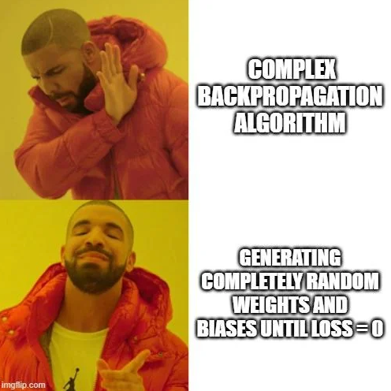
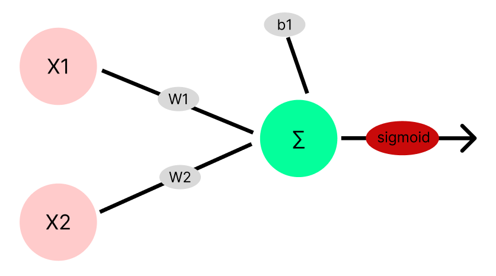
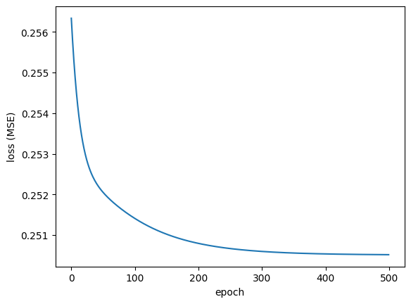
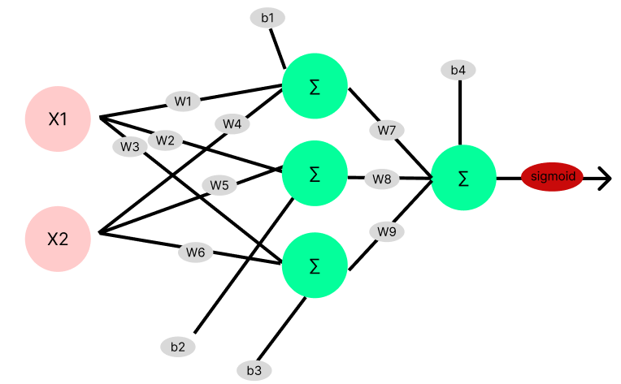
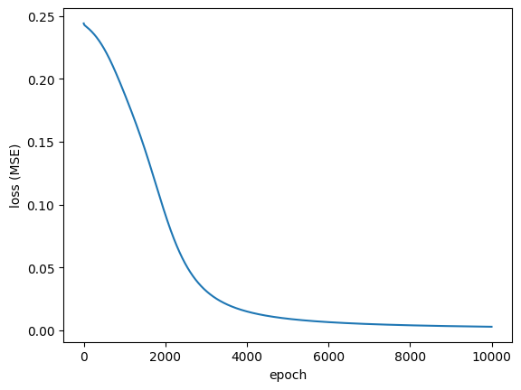

import numpy as np
import matplotlib.pyplot as plt
np.random.seed(42)
# 시그모이드
def sigmoid(x):
return 1/(1+np.exp(-x))
# 시그모이드 도함수
def sigmoid_derivative(x):
return x * (1 - x)
# 손실함수
def mse_loss(y_true, y_pred):
return np.mean((y_true-y_pred)**2)
# 예시 데이터 (XOR)
X = np.array([[0,0], [0,1], [1,0], [1,1]])
y = np.array([0,1,1,0]).reshape(-1,1)Backpropagation (역전파)
퍼셉트론의 가중치 업데이트 방법

Backpropagation (역전파)
Backpropagation은 Artificial Neural Network를 학습시키기 위한 일반적인 알고리즘 중 하나이다. 한국말로 직역하면 역전파라는 뜻인데,
target값과 실제 모델이 계산한 output이 얼마나 차이가 나는지 구한 후,
그 오차값을 다시 뒤로 전파해가면서 각 뉴런이 가지고 있는 변수들을 갱신하는 알고리즘이다.
체인룰(chain rule) 은 미적분학에서 사용되는 중요한 개념 중 하나로, 함수의 미분을 연쇄적으로 계산할 때 도움을 주는 규칙이다.
딥러닝에서도 backpropagation (역전파) 알고리즘을 이해하고 구현하는 데 필수적인 개념 중 하나이다.
체인룰은 다음과 같이 표현된다. 두 개의 함수 f(x)와 g(x)가 있을 때, f(g(x))의 도함수(미분)를 계산할 때 사용된다.
(d/dx)[f(g(x))] = (df/dg) * (dg/dx)
여기서 각 항목의 의미는 다음과 같다:
(d/dx)는 x에 대한 미분을 의미합니다.f(g(x))는 함수 f를 함수 g의 출력에 적용한 것을 나타냅니다.(df/dg)는 함수 f를 함수 g의 출력에 대해서 미분한 것을 나타냅니다.(dg/dx)는 함수 g를 x에 대해서 미분한 것을 나타냅니다.
이 규칙을 사용하여 복잡한 함수를 구성하는 동안 각 함수의 미분 값을 계산하고, 그 값을 이용하여 전체 함수의 미분을 계산할 수 있다.
이러한 체인룰은 신경망에서 각 층의 미분을 효과적으로 계산하는 데 사용되며, 역전파 알고리즘의 핵심 구성 요소 중 하나이다.
딥러닝에서는 체인룰을 통해 모델을 훈련시키고, 가중치 및 편향을 업데이트하는 데 사용된다.
예시 1
모델 구조
1-레이어, 1퍼셉트론이고 input 변수가 2개인 신경망을 사용해서 backpropagation 구현
Backward Pass
\[ \frac{\partial L}{\partial a_1} = (a_1 - y) \] \[ \frac{\partial L}{\partial z_1} = \frac{\partial L}{\partial a_1} \times \sigma'(a_1) \] \[ \frac{\partial L}{\partial W_1} = X^T \frac{\partial L}{\partial z_1} \] \[ \frac{\partial L}{\partial b_1} = \sum \frac{\partial L}{\partial z_1} \]
Weight Update:
\[ W_1 = W_1 - \text{learning\_rate} \times \frac{\partial L}{\partial W_1} \] \[ b_1 = b_1 - \text{learning\_rate} \times \frac{\partial L}{\partial b_1} \]
Visualization

| x1 | x2 | y |
|---|---|---|
| 0 | 0 | 0 |
| 0 | 1 | 1 |
| 1 | 0 | 1 |
| 1 | 1 | 0 |
input_size = 2
output_size = 1
learning_rate = 0.1
epochs = 500
loss_log = []
W1 = np.random.randn(input_size, output_size)
b1 = np.zeros(1)
for epoch in range(epochs):
# Forward Pass
z1 = np.dot(X,W1) + b1
a1 = sigmoid(z1)
# Loss
loss = mse_loss(y,a1)
loss_log.append(loss)
# Backward Pass
da1 = a1-y
dz1 = da1 * sigmoid_derivative(a1)
dW1 = np.dot(X.T, dz1)
db1 = sum(dW1)
W1 = W1 - learning_rate*dW1
b1 = b1 - learning_rate*db1plt.plot(loss_log)
plt.xlabel("epoch")
plt.ylabel('loss (MSE)')
plt.show()
0.5로 수렴
for i in range(len(a1)):
print(f"true : {y[i]}, pred : {a1[i]}") true : [0], pred : [0.46165457]
true : [1], pred : [0.48309155]
true : [1], pred : [0.49126563]
true : [0], pred : [0.51276794]예시 2
모델 구조
1-레이어, 3-퍼셉트론
Visualization

input_size = 2
hidden_size = 3
output_size = 1
W1 = np.random.randn(input_size, hidden_size)
b1 = np.zeros((1, hidden_size))
W2 = np.random.randn(hidden_size, output_size)
b2 = np.zeros((1, output_size))
learning_rate = 0.1
epochs = 10000
loss_log = []
for epoch in range(epochs):
# Forward Pass
z1 = np.dot(X, W1) + b1
a1 = sigmoid(z1)
z2 = np.dot(a1, W2) + b2
a2 = sigmoid(z2)
# Loss
loss = np.mean((y - a2) ** 2)
# Backward Pass
da2 = (a2 - y)
dz2 = da2 * sigmoid_derivative(a2)
dW2 = np.dot(a1.T, dz2)
db2 = np.sum(dz2, axis=0, keepdims=True)
da1 = np.dot(dz2, W2.T)
dz1 = da1 * sigmoid_derivative(a1)
dW1 = np.dot(X.T, dz1)
db1 = np.sum(dz1, axis=0, keepdims=True)
# 가중치 업데이트
W2 -= learning_rate * dW2
b2 -= learning_rate * db2
W1 -= learning_rate * dW1
b1 -= learning_rate * db1
# 일정 에포크마다 손실 출력
if epoch % 1000 == 0:
print(f"Epoch {epoch}/{epochs}, Loss: {loss:.4f}")
loss_log.append(loss)Epoch 0/10000, Loss: 0.2440
Epoch 1000/10000, Loss: 0.1881
Epoch 2000/10000, Loss: 0.0920
Epoch 3000/10000, Loss: 0.0313
Epoch 4000/10000, Loss: 0.0149
Epoch 5000/10000, Loss: 0.0092
Epoch 6000/10000, Loss: 0.0065
Epoch 7000/10000, Loss: 0.0049
Epoch 8000/10000, Loss: 0.0040
Epoch 9000/10000, Loss: 0.0033plt.plot(loss_log)
plt.xlabel("epoch")
plt.ylabel("loss (MSE)")
plt.show()
1-퍼셉트론 모델보다 좋은 성능을 보인다.
for i in range(len(a2)):
print(f"true : {y[i]}, pred : {a2[i]}") true : [0], pred : [0.02224667]
true : [1], pred : [0.94486905]
true : [1], pred : [0.94514992]
true : [0], pred : [0.06836053]